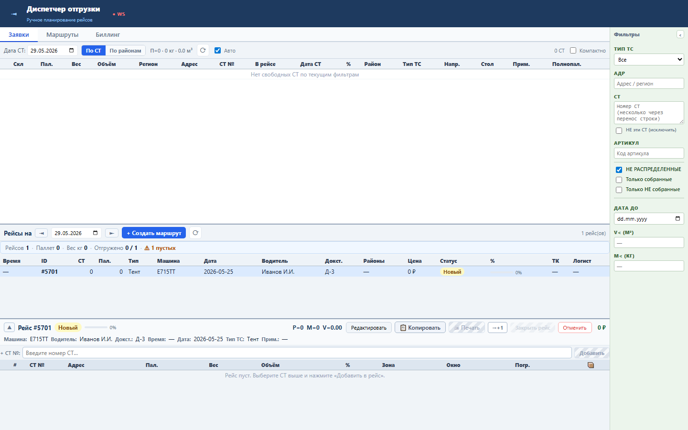
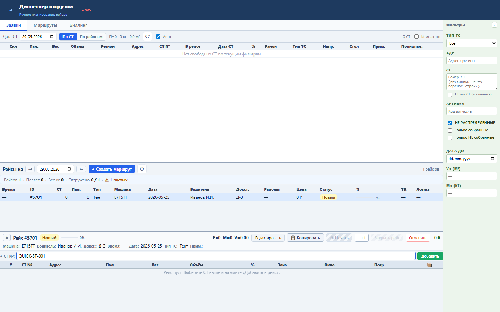
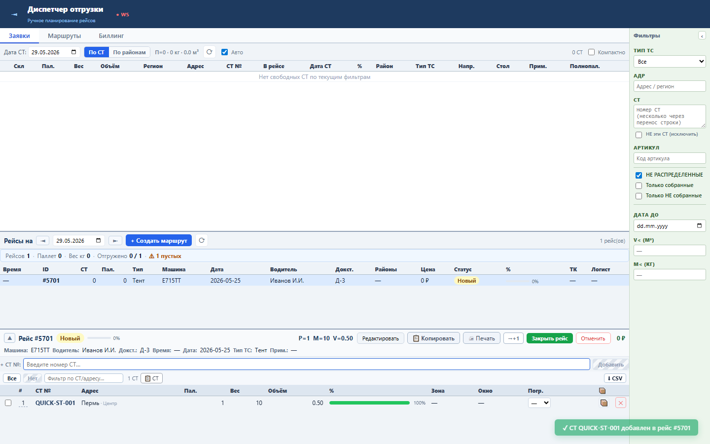

Блок позволяет диспетчеру добавить СТ в выбранный рейс по номеру, не прокручивая и не фильтруя общий список заявок.
Форма отправляет существующий endpoint POST /tasks/{id}/sts с payload { st_numbers: [номер] }. После успеха input очищается, состав рейса и списки перезагружаются.
+ СТ №.Sprint 57 закрыт functional, no-mutation load и UI smoke проверками.


